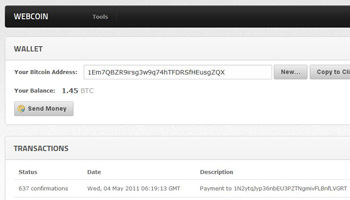
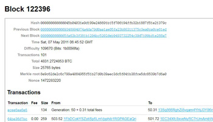

Here are some example projects built using BitcoinJS libraries. All of these are open-source, so feel free to check out the code and run them for yourself!
- 
Webcoin
Browser-based Bitcoin wallet. Connects to a BitcoinJS exit node via Socket.IO and provides full wallet functionality without any installation.
- JavaScript-based cryptography
- Socket.IO realtime communication
- Minimalistic design
- 
Bitcoin Explorer
A block explorer clone written using bitcoinjs-server. Good example for using the peer-to-peer library and extracting data from the blockchain.
- Single JavaScript file (plus some templates)
- Shows blocks, transactions and addresses
- Current network state without delay
Technology
BitcoinJS uses the latest and highest quality open-source components for speed, reliability, flexibility and ease-of-use.